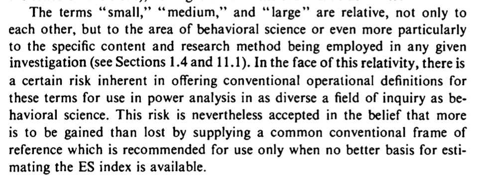

library(haven) # the package I found to load the exam data.
d <- read_sav("~/Dropbox/!GRADSTATS/gradlab/Exams/objectivityposted.sav") Lecture 6 - T-Tests Are [SPOILER ALERT] Linear Models
Check-In Here (unless you already did)
^^^ The “Exit Survey” I sent out after the exam.
Can skip if you already did this, but only 5 students did as of 10:07 PM on Sunday.
Agenda
11:10 - 11:25 | Check-In / R Exam Debrief
11:25 - 12:30 | Linear Model when the IV is categorical
12:30 - 12:45 | BREAK
12:45 - 1:10 | Student Presentations!
1:10 - 2:00 | T-Tests and Work on Lab 6
R Exam Debrief
Professor should post key ASAP? [Y/N]
Thanks for your patience :)
The Linear Model in (Categorical IV) Form
Two-Level Categorical IV : Simple!
Step 0 : Develop a Question and Set Hypotheses.
Question : In the paper (from the R Exam dataset), the researchers predicted that scholars of color would be less likely to use power words (variable =
power) in their abstracts than White scholars. Test this theory.Hypotheses :
Null Hypothesis :
Alternative Hypothesis :
Step 1 : Load Data
Step 2 : Evaluate Your Individual Variables.
Step 3 : Define and Interpret Your Linear Model.
The Model : \(\hat{Y} = a + b_1 * X_1\)
- \(a\) (sometimes = Intercept = Predicted Value of Y when all X values are zero.
- \(X_1\) = A dummy coded categorical variable. This is often the default method of comparing two groups, and compares each level of the factor to a reference level.
\(X_1\) = 0 =
\(X_1\) = 1 =
- \(b_1\) = the slope = the predicted change in Y as X changes by 1
Using the Model to Make Predictions
predicted DV if IV = 0?
predicted DV if IV = 1?
- Note that these values are the same as the average DV for people who were in each group of the IV.
The Graph. A few ways to graph the linear model with the IV is categorical.
- Note that the
plot()function draws a boxplot that illustrates the median of each group; whereas the linear model emphasizes the mean.
- Note that the
# plot(DV ~ IV, data = d)- For “quick” methods, I like
plotmeans()from thegplots()library. This plots the mean of each group.
#install.packages("gplots")
library(gplots)
Attaching package: 'gplots'The following object is masked from 'package:stats':
lowess#plotmeans(DV ~ IV, data = d, connect = F)Step 4 : Evaluate the Effect Size?
- \(R^2\) (Effect Size) : This describes the percentage of variation in hunger that is explained by our model (in this case, using whether someone had breakfast to make predictions of hunger.) So, using the model to make predictions of hunger reduces our squared errors by %17 (vs. using the mean to make predictions.)
- Cohen’s D : (see below!)
Something New : Cohen’s D (Effect Size)
People find \(R^2\) confusing and unit-less and about squared numbers and describes how good the model is as a whole; sometimes I just want to understand how BIG the difference between the groups is. One method people us is to compare the distance between groups, relative to the average distance between individuals (the standard deviation.)
However, if we are assuming these groups are different in some important way, then we may not want to use a standard deviation statistic that considers individuals to belong to the same group. The pooled standard deviation is a weighted average of the standard deviation from each group.
### subsetting the data into two groups.
#d0 <- d[d$IV == "levelA",]
#d1 <- d[d$IV == "levelB",]
## calculating the sample size of these two new datasets.
#n0 <- nrow(d0)
#n1 <- nrow(d1)
#df0 <- n0-1 # the sample size, minus 1
#df1 <- n1-1
#var0 <- var(d0$DV)
#var1 <- var(d1$DV)
#poolvar <- ((df1 * var1) + (df0 * var0))/(df1 + df0)
#poolsd <- poolvar^.5
#diff <- coef(mod)[2] # the difference between groups (the slope)
#diff/poolsd- The psych package has a cohen’s d function built in that calculates this for you.
library(psych)
#cohen.d(d$DV, d$IV)
#cohen.d(DV ~ IV, data = d)Okay, so what does this statistic mean? Well, this tells us that the difference between folks who had breakfast and those who did not (the slope in our model) is not even as large as the difference between any two random individuals (the pooled sd). But is this a little? A lot?
- Many people reference Cohen’s “convention” of what defines effect size to be small (d = .2), medium (.5), and large effect (d = .8). However, this summary glosses Cohen’s disclaimer, as well as a ton of other context that Cohen provides in his original book.

ACTIVITY : Look over this nice interactive guide for interpreting Cohen’s D. How does this visualization help you think about the difference? Does this difference seem like a little? A lot??
Here’s a great article working through some of the issues in effect size calculation and interpretation.
A Note on Dummy Coding
- R will default to a reference level based on alphabetical order, so in this case, “No” will be the reference group. To change the reference group, you can relevel the factor.
# d$IVR <- relevel(d$IV, ref = "references")Step 5 : Evaluate The Assumptions of Linear Regression
The Assumptions
The interpretation of our linear model depends on a variety of different assumptions being met. You can read more about these from the great Gelman & Hill’s textbook : Data Analysis Using Regression. But below is a TLDR, with a few ideas of my own thrown in :)
Validity. Is your linear model the right model to answer the research question that you have? This is the big question, and often goes beyond the specific statistics that we are focusing on. Did you include the right variables in your model, or are you leaving something out? Are you studying the right sample of people, drawn from the right population? Are your measures valid? This is hard to do, and good to remember that it is hard so you ask yourself “am I doing a good job”?
Reliability of Measures. The variables in your linear model should be measured with low error (“garbage in, garbage out”). There are different ways to assess reliability.
Cronbach’s alpha (
psych::alpha()) is good for assessing the inter-item reliability of a likert scale.The Intraclass Correlation Coefficient (ICC) is often used for observational ratings where multiple judges form impressions of the same target.
Test-retest reliability is a great way to ensure that physiological or single-item measures will yield repeatable measures over time (assuming the target of measurement has not changed between time points). One way to test this is to define a linear model to predict the measure at one time point from the measure at another; you’d expect to see a strong relationship.
Independence. This is a big one - the residuals in your model need to be unrelated to each other. That is, I should not be able to predict the value of one error from another error. When the data in a linear model come from distinct individuals who are unrelated to each other, this assumption is usually considered to be met. However, there are often types of studies where the data are not independent.
Nested Data : Often times, individuals in a dataset belong to a group where there’s a clear dependence. For example, the happiness of individual members of a family is probably dependent on one another (since they share the same environment, stressors, etc.); the test-scores of children in a school are probably all related to each other (since they share the same teachers, administrators, funding, lead exposure in the drinking water, etc.)
Repeated Measures : If a person is measured multiple times, then their data at one time point will be related to their data at the second time point, since they are coming from the same person, with the same past experiences and beliefs and genetics and all that other good stuff.
If the data are not independent, then we will need to account for the dependence in the data. We will learn to do this when we review Multilevel Linear Models. (Spoiler : it’s more lines.)
Linearity. The dependent (outcome) variable should be the result of one or more linear functions (slopes). In other words, the outcome is the result of a bunch of straight lines. If the straight lines don’t properly “fit” or “explain” your data, then maybe you need some non-straight lines…you could bend the line (add a quadratic term), look for an interaction term (that tests whether there’s a multiplicative relationship between the variables), or apply a non-linear transformation to the data (i.e., often times income is log transformed, since a 9,000 point difference between 1000 and 10,000 dollars/month is not the same as a 9,000 point difference between 1,000,000 and 1,009,000 dollars/month).
Equal Variance of Errors (Homoscedasticity). The errors associated with the predicted values of the DV (the residuals) should be similar for all different values of the IV. Homoscedasticity means that the residual errors in our outcome variable are distributed the same across the different values of the IV. Heteroscedasticity means there is some non-constant variability in errors, which means that your model may not be an appropriate explanation of the data.
Normality of Errors (Residuals and Sampling). This assumption is less emphasized as our datasets have gotten larger, and methods for estimating sampling error have improved. But the basic idea is that statistics like confidence intervals and estimates of slopes assume that the errors in our model are normally distributed. If they are not, it’s likely that your model is not appropriately fitting the data (i.e., maybe some outliers are influencing the results.)
Testing Assumptions in R
Assumptions 1-3 require critical thinking about your methods and measures.
Assumptions 4 and 5 can be examined using the plot() function in base R - you may have accidentally come across these when trying to graph your linear model.
We talked about how to interpret these plots a little in lecture; here’s another tutorial that walks through the interpretation. Let us know (on Discord!) if you find another good example / explanation.
#par(mfrow = c(2,2))
#plot(mod)Assumption 6 can be examined by graphing the residuals of your model object with a histogram.
#par(mfrow = c(1,1))
#hist(mod$residuals)Step 6 : Estimate Sampling Error
Bootstrapping.
Presentations
The T-Test
Our linear model compares the difference between two groups. This is similar to what a t-test does. However, the t-test also compares this difference to an estimate of sampling error - the standard error - that estimates how much of a difference we might find if we were drawing a random sample from a population where there was no difference in groups (the null population.)
The basic equation for the standard error is : \(se = sd(x) / \sqrt{n}\)
We can easily pull up these statistics using the summary() function. The interpretation of these statistics will take more time!
#summary(mod)Standard Error is similar to the sampling error we estimated through bootstrapping (you will test this in Lab 6!).1
1 (And side note : to get what R calculates in our model, we will weight each pooled variance by the sample size of each group.)
#sqrt((poolvar/n0) + (poolvar/n1))However, there are a few key conceptual and computational differences.
| Bootstrapping | Null Hypothesis Significance Testing (Standard Error) | |
|---|---|---|
how to estimate sampling error. we want to estimate how much our statistics might change due to re-sampling, because our sample isn’t a perfect representation of the population. |
we generate lots of “new” samples from our original dataset. these new samples are the same size as our original sample, but we use sampling with replacement to make sure we don’t get the exact same people in the sample every time. the goal is to see how small changes to our sample (that we might find with sampling error) influence our results (the model). | we calculate a statistic that is based on:
|
| statistic we care about that defines sampling error | standard deviation of the 1,000 (or however many) slopes we generated from bootstrapping. | standard error (estimates how much the average slope would differ from b = 0….the expected slope assuming the null) |
| how to evaluate our slope, relative to sampling error | calculate the % of slopes in the same direction as our slope calculate 95% confidence intervals, and see whether that range includes zero and / or numbers in the opposite direction of the slope you found. (e.g., if you found a negative number, does the range include positive numbers? If so, then likely we’d find a positive relationship due to chance) |
t-value : evaluates slope you found, relative to slope you might find due to random chance. use the t-value to calculate the probability given your distribution, and reject if p < .05 (or be more conservative and reject if p < .01 or p < .001). |
Note that the t-test does the same thing that our linear model does; evaluates the difference in groups, relative to an estimate of the sampling error we might observe.
#summary(mod)
#t.test(d0$DV, d1$DV, var.equal = T)